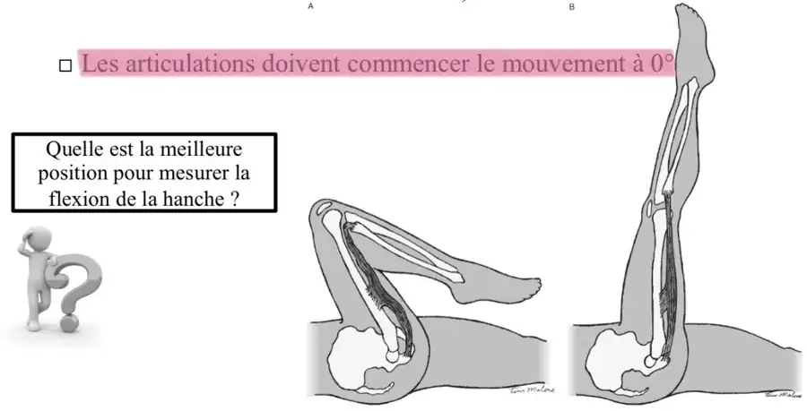

Partiel récent — questions remémorées
Testing musculaire
Vrai ou faux.
Définition de la force : capacité d'un muscle ou d'un groupe musculaire à générer une tension dans un temps et à une vitesse donnés.
Corrigé proposé
Réponse : VRAI. C'est la définition du cours : la force est la capacité d'un muscle ou d'un groupe musculaire à générer une tension, dans un temps donné et à une vitesse donnée. C'est une qualité physique neuromusculaire.
Les muscles ont un rôle dans le mouvement et dans le soutien des structures squelettiques.
Corrigé proposé
Réponse : VRAI. Outre le mouvement, les muscles soutiennent les structures squelettiques. Un muscle doit être assez long pour permettre la mobilité, et assez court pour contribuer à la stabilité.
La fiabilité d'un test musculaire se reflète lorsque les tests sont effectués de la même manière, au même point de l'amplitude.
Corrigé proposé
Réponse : VRAI. La fiabilité intra- et inter-examinateur n'est garantie que si le test est réalisé de la même manière, au même point de l'amplitude, à chaque fois.
Facteurs influençant le testing musculaire : la méthode de test, le type d'instructions, la couleur des vêtements.
Corrigé proposé
Réponse : FAUX. La méthode (Kendall ou Daniels) et le type d'instructions font bien partie des facteurs. La couleur des vêtements, non.
Les vrais facteurs :
- liés à la technique : point et ligne d'application de la résistance, intensité, vitesse, durée, ton de la voix ;
- liés au patient : coopération, fatigue, douleur, anxiété ;
- liés à l'observateur : connaissances, technique, expérience.
Définition de l'amplitude de mouvement : espace dans lequel le segment se déplace, de la position neutre à la position extrême.
Corrigé proposé
Réponse : VRAI. L'amplitude de mouvement est l'espace dans lequel le segment se déplace, de la position neutre à la position extrême. Elle ne se confond pas avec l'amplitude de test, propre au muscle testé.
Position de test des muscles bi-articulaires : on les évalue en position intermédiaire de l'amplitude totale.
Corrigé proposé
Réponse : VRAI. Les muscles bi-articulaires sont évalués à la position intermédiaire de l'amplitude totale. Les mono-articulaires doivent compléter l'amplitude articulaire.
Caractéristiques des personnes âgées (2 ou 3 étaient données) : peuvent-elles affecter les tests musculaires ?
Corrigé proposé
Oui. Chez la personne âgée :
- perte de masse et de force musculaires ;
- diminution de la taille et du nombre des fibres, surtout de type II ;
- moins d'unités motrices, des axones moins nombreux et plus fins, une vitesse de conduction plus lente, une excitabilité réduite ;
- un ralentissement de la contraction et une baisse du taux de développement de la force.
S'y ajoutent les douleurs, la fatigue et les limitations d'amplitude. Tout cela modifie la cotation et impose d'adapter les positions et l'interprétation.
Cas pratiques (nombreux) : coter la force avec l'échelle MRC et attribuer les grades amplitude/force (A/F).
Corrigé proposé
Méthode : on détermine d'abord passivement l'amplitude disponible. On place le segment, on stabilise le segment proximal, puis on teste.
Échelle de cotation :
- 0 : aucune contraction ;
- 1 : contraction perçue sans mouvement ;
- 2 : amplitude complète, gravité éliminée (plan horizontal) ;
- 3 : amplitude complète contre la gravité, sans résistance ;
- 4 : contre une résistance modérée ;
- 5 : contre une résistance maximale.
Les signes − et + nuancent la cote : 2−, 2+, 3−, 3+, 4−, 4+.
Amplitude / force : on note séparément l'amplitude parcourue et la force. Exemple : « amplitude complète contre la gravité, résiste modérément » = 4. Si l'amplitude est limitée, on cote la force sur l'amplitude disponible et on le précise.
Les cotes inférieures à 3 s'écrivent en rouge.
Goniométrie
Légender un goniomètre (corps, bras fixe, bras mobile).
Corrigé proposé
Corps (axe, ou pivot) aligné sur l'axe articulaire, bras fixe aligné sur le segment proximal, bras mobile aligné sur le segment distal. Il faut aussi lire correctement l'échelle (graduations de 5 ou 10°).
Construire un tableau d'enregistrement à partir d'une situation clinique.
Corrigé proposé
Le tableau d'enregistrement comporte :
- l'identité du patient (nom, âge, sexe), le kinésithérapeute, la date, le lieu et le type de goniomètre ;
- pour chaque articulation et chaque mouvement : le côté droit, le côté gauche et la valeur de référence ;
- l'end-feel et la douleur (par exemple l'EN à l'apparition et au maximum) ;
- toute modification de position, et les amplitudes anormales marquées en rouge.
Exemple :
| Coude | Droit | Gauche | Référence |
|---|---|---|---|
| Flexion | 50° (fin de course vide) | 140° | 140° |
Compléter les phrases suivantes :
- Quand il y a une diminution de l'amplitude articulaire, c'est une ………… due à une rétraction musculaire.
- Quand il y a une augmentation de l'amplitude articulaire, c'est une ………… due à une laxité ligamentaire.
Corrigé proposé
- … c'est une hypomobilité, due à une rétraction musculaire.
- … c'est une hypermobilité, due à une laxité ligamentaire.
Vrai ou faux : les articulations doivent commencer le mouvement à 0°.
Corrigé proposé
Réponse : VRAI. La mesure se fait à partir de la position de départ à 0° (position anatomique de référence). Si ce n'est pas possible, on note la position adaptée dans le dossier.
Quelle est la meilleure position pour mesurer la flexion de hanche ? Donner 2 arguments.
🖼️ Afficher le schéma 15 Ko

Corrigé proposé
Meilleure position : décubitus dorsal, genou fléchi (image A).
- Genou fléchi, les ischio-jambiers, bi-articulaires, sont détendus. On mesure alors l'amplitude de l'articulation de la hanche, et non la longueur des ischio-jambiers. Genou tendu, la flexion est limitée plus tôt, avec une fin de course ferme.
- En décubitus, le bassin et la colonne lombaire sont stabilisés, le membre opposé étant tendu sur la table. On limite ainsi la rétroversion du bassin, qui ferait surestimer l'amplitude, et c'est la position standardisée des valeurs de référence (environ 120°).
D'après les étudiants, les parties « introduction à l'exercice thérapeutique » et « mobilisation articulaire » ne comportaient pas de question remémorée ; la majorité des questions correspondaient directement au contenu des cours.